class: center, middle # EE-463 STATIC POWER CONVERSION-I # Diode Rectifiers ## Ozan Keysan ## [keysan.me](http://keysan.me) ### Office: C-113 <span class="meta">•</span> Tel: 210 7586 --- # Announcement ## Until next week: - ### Please open a [GitHub](https://github.com/) account - ### Read [basics](https://www.atlassian.com/git/tutorials/what-is-version-control) on version control ([and more](http://keysan.me/okst/)) - ### Install Simulink or PSIM start practising --- # Line Frequency Diode Rectifiers -- 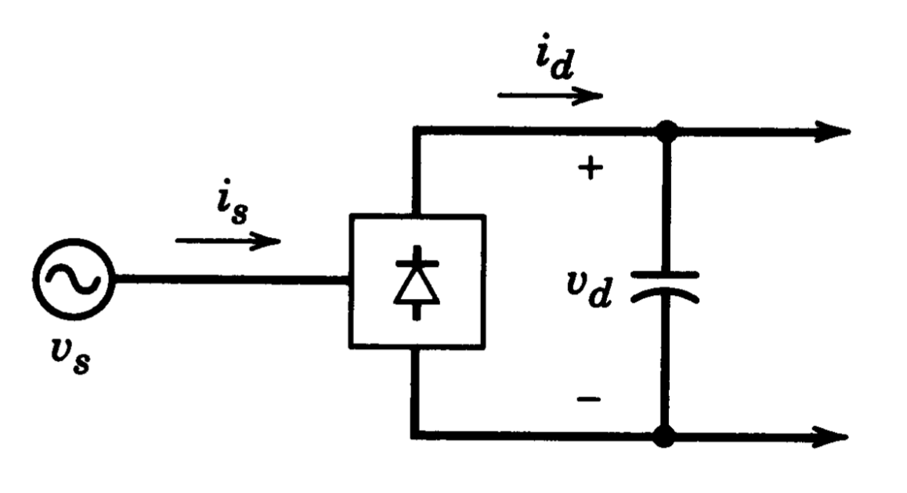 --- # Line Frequency Diode Rectifiers ## Ideal Rectifier -- - ## Ripple free DC output -- - ## Sinusoidal (THD=0) input current -- - ## High Efficieny -- - ## Small Size (High Power Density) --- # Simplest Case: One diode with resistive load -- 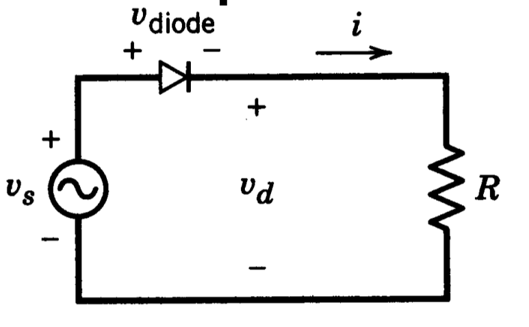 ## Can you plot the voltage-current waveforms? -- ### What about the average voltage? --- # One Diode with R-L Load -- 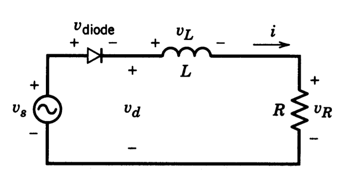 -- ## Let's plot the equivalent circuits --- # One Diode with R-L Load -- ## Diode continues to conduct for extended period -- 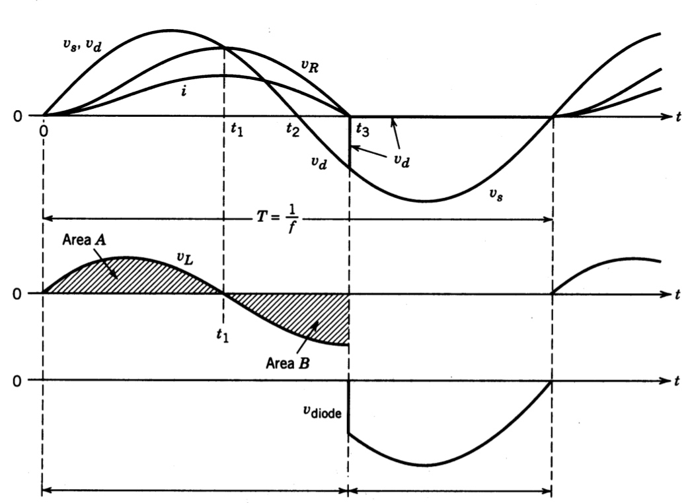 --- # One Diode with R-L Load -- ## Diode continues to conduct for extended period: # Commutation! -- ## How does the average voltage change with commutation? -- ## It becomes smaller! --- # One Diode with back-emf (i.e. DC Motor) 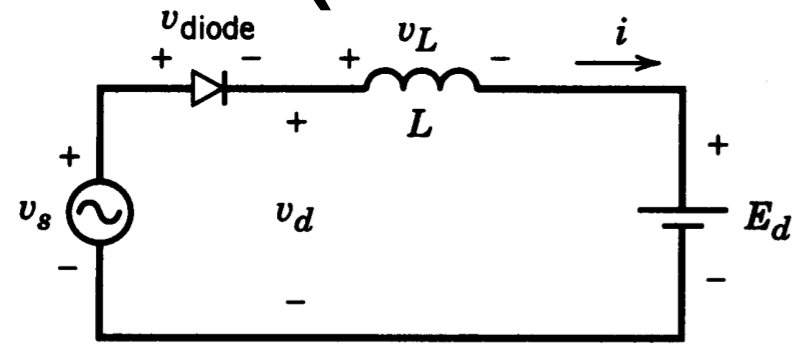 -- ### Current starts flowing when vs > Ed --- # One Diode with back-emf (i.e. DC Motor) -- 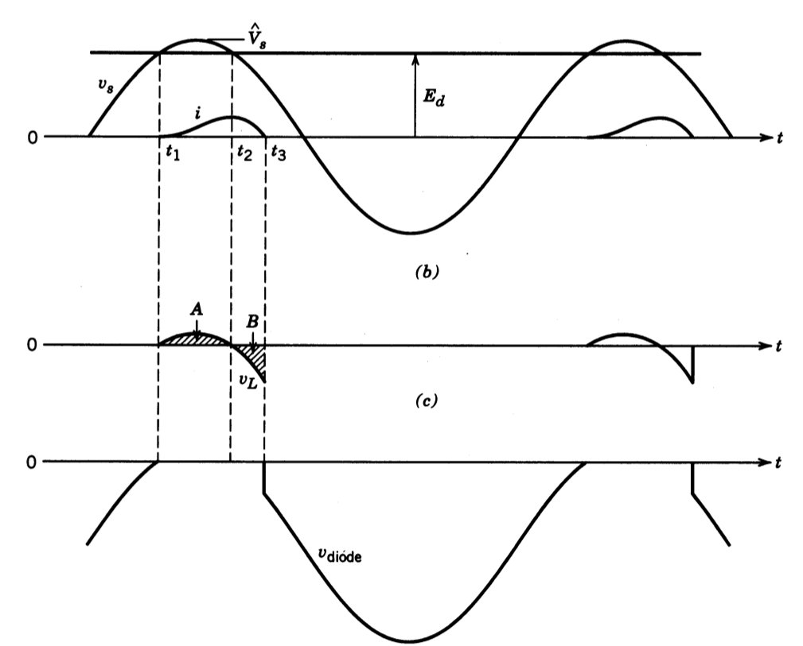 --- # Single-Phase Diode Rectifier <img src="https://satkit.com/image/cache/catalog/products/einphasen-dioden-bruckengleichrichter-50a-1000v-kbpc5010-neu-electronic-tools-a5029-700x700.jpg" alt="Drawing" style="width: 300px;"/> <img src="https://static4.tme.eu//products_pics/5/a/9/5a90af676c79195c3ef44cb4d4ee3fdf/442390.jpg" alt="Drawing" style="width: 400px;"/> ## Bridge Rectifer --- # Single-Phase Diode Rectifier 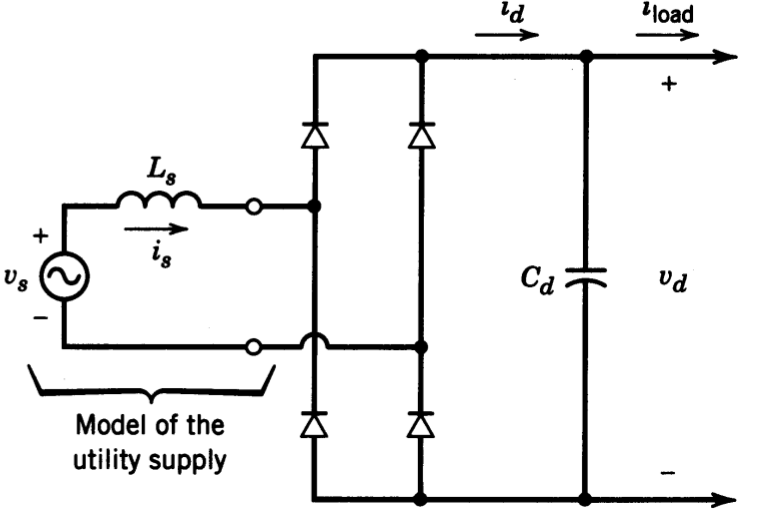 ## Let's assume ideal source (Ls=0) to start with --- # Single-Phase Diode Rectifier ### Also assume load draws constant current (id) -- 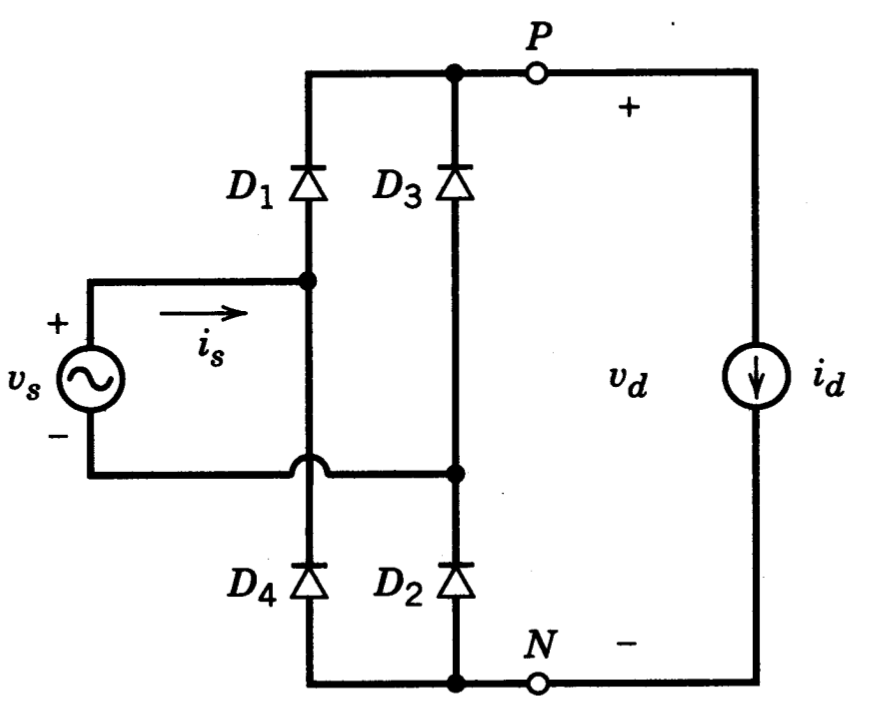 --- # Single-Phase Diode Rectifier ### Let's redraw it 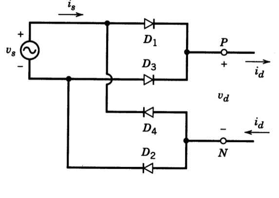 --- # Single-Phase Diode Rectifier ## Can you calculate the average output voltage? -- ## Can you plot the input current waveform? -- ## What about the THD of input current? --- # Single-Phase Diode Rectifier 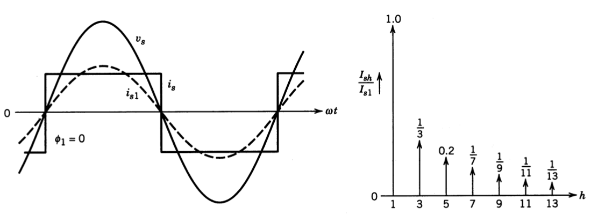 ## THD of current (square waveform)= -- \\(\frac{\sqrt{1-\frac{2\sqrt{2}}{\pi}^2}}{\frac{2\sqrt{2}}{\pi}}\\) --- # Single-Phase Diode Rectifier ## THD of current (square waveform)= \\(\frac{\sqrt{0.19}}{0.9}=0.484\\) --- # A Big Paranthesis on Fourier Series -- > ## All waveforms, no matter what you scribble or observe in the universe, are actually just the sum of simple sinusoids of different frequencies. --- # Fourier Series <iframe width="560" height="315" src="https://www.youtube-nocookie.com/embed/LznjC4Lo7lE?rel=0&showinfo=0" frameborder="0" allowfullscreen></iframe> [Interactive Fourier Series](https://bl.ocks.org/jinroh/raw/7524988/), [Complex Orbits](https://www.youtube.com/watch?v=QVuU2YCwHjw), [Singing Train](https://www.youtube.com/watch?v=vdNCrj14cK0), [Useful applets](http://www.falstad.com/fourier), [Fourier examples](http://ptolemy.eecs.berkeley.edu/eecs20/week8/examples.html) [More Useful Links on Fourier Series](http://keysan.me/explained/) --- # Fourier Series <img src="http://mathworld.wolfram.com/images/equations/FourierSeries/NumberedEquation1.gif" alt="Drawing" style="width: 600px;"/> -- ### Coefficients <img src="http://www.sosmath.com/fourier/fourier1/img18.gif" alt="Drawing" style="width: 400px;"/> --- # Some Important Functions -- ### Even function: -- \\(f(-t)=f(t)\\) -- \\(\rightarrow b_h=0\\) -- ### Odd function: -- \\(f(-t)=-f(t)\\) -- \\(\rightarrow a_h=0\\) -- ### Half-wave: -- \\(f(t)=-f(t+T/2)\\) -- ### \\(\rightarrow a_h=b_h=0\\) for even harmonics -- ### Even quarter-wave: -- Even and Half-wave symmetry -- ### \\(\rightarrow b_h=0\\) for all harmonics ### \\(\rightarrow a_h=0\\) for even harmonics --- # Effect of Line Inductance -- 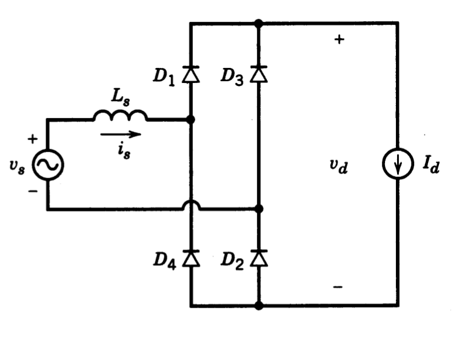 ## Can you still draw square current from grid? -- ### There has to be finite time between +Id to -Id transition. --- # Let's start with a simple circuit -- 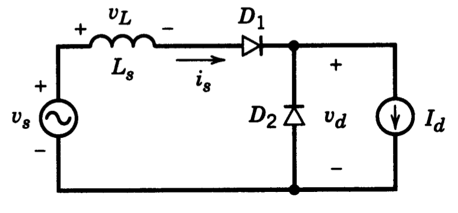 -- ### Draw the equivalent circuits at each interval --- ### Voltage Waveforms -- 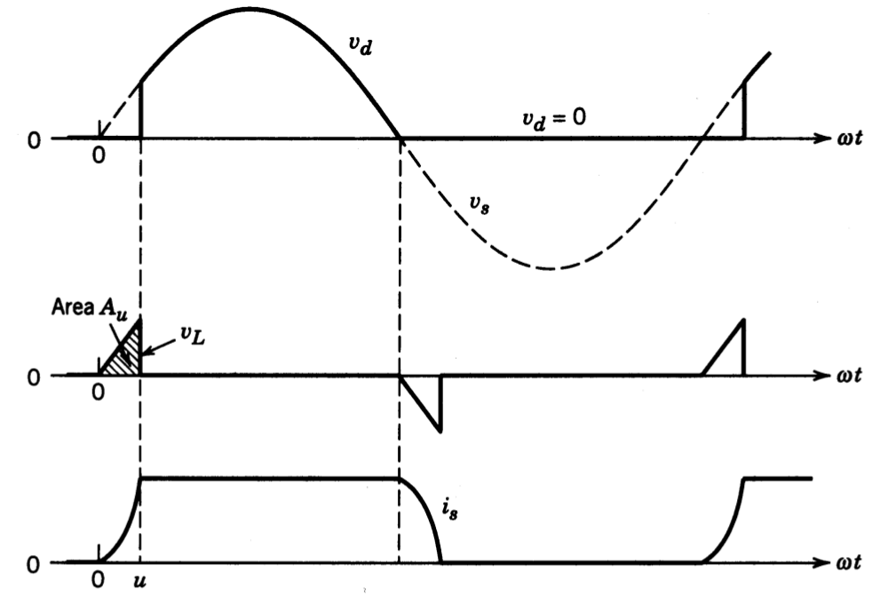 --- ## How to calculate the commutation period (u)? -- ## \\(cos(u) = 1- \dfrac{\omega L_s I_d}{\sqrt{2} V_s}\\) -- - ## Ls, Id increases commutation time -- - ## Vs reduces commutation time --- ## How does the average voltage changes? -- ## \\(Vd= \dfrac{0.9 Vs}{2} - \dfrac{Au}{2\pi}\\) -- ## Reduction in average voltage ## \\(\Delta Vd= \dfrac{\omega Ls}{2\pi} Id\\) --- ## What about commutation in single phase rectifier? --- ## Voltage-Current Waveforms 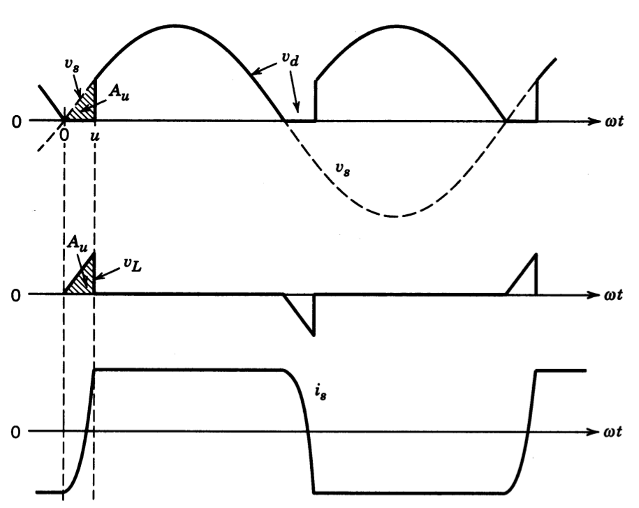 --- ## How does the average voltage changes? -- ## Similar to previous case,but: - ## Current goes from -Id to Id - ## Commutation happens twice (2Au) -- ## \\(Vd= 0.9 Vs - \dfrac{2 \omega Ls}{\pi} Id\\) --- # Rectifier with DC Side Voltage -- 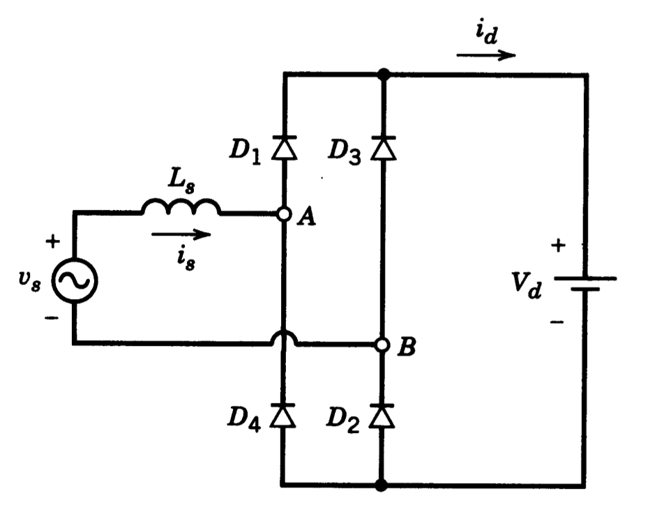 --- # Can you plot the voltage waveforms? -- 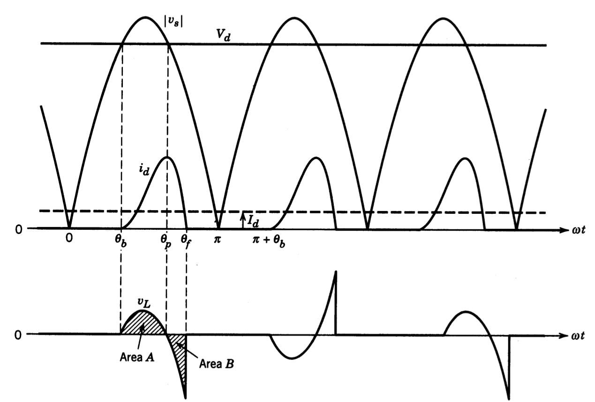 --- # Average current ## \\(Id\_{av}= \dfrac{\int_b^f i(\theta) d \theta}{\pi} \\) -- ## What is the short circuit current (when Vd=0)? -- ## \\(Id\_{(short-circuit)} = \dfrac{Vs}{\omega Ls}\\) --- ## How does the average current changes with Vd? -- 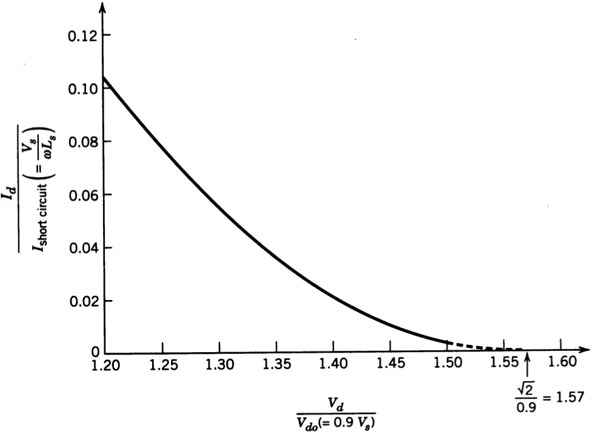 --- ## What about THD vs Id current? -- 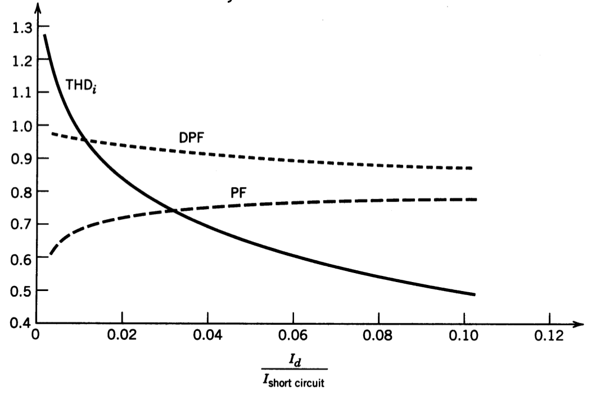 --- ## Crest Factor vs Id current? -- 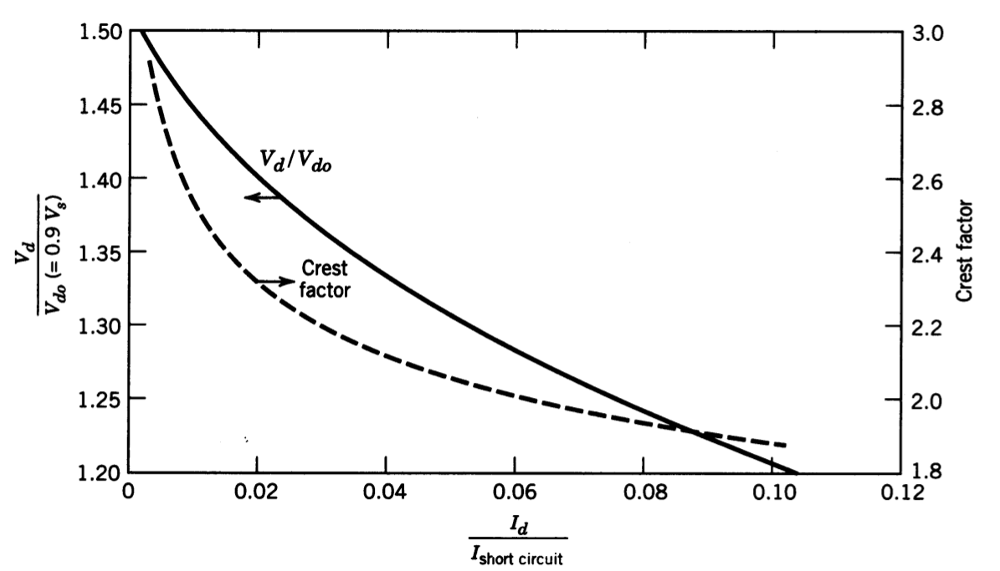 --- # Some Alternative Topologies -- --- # Centre-Tap Rectifier -- <img src="http://hyperphysics.phy-astr.gsu.edu/hbase/Electronic/ietron/rectct.gif" alt="Drawing" style="width: 800px;"/> --- # Centre-Tap Rectifier <img src="http://hyperphysics.phy-astr.gsu.edu/hbase/Electronic/ietron/rectct2.gif" alt="Drawing" style="width: 800px;"/> --- # Centre-Tap Rectifier ## Can you compare it with the full-bridge rectifier? #### in terms of: -- - ### Number of Diodes (and ratings) -- - ### Cost -- - ### Current Waveform --- ## Voltage Doubler Rectifier -- <img src="https://www.lifewire.com/thmb/uU0d3vCrHp2VupSwak7Du5Il0QI=/768x0/filters:no_upscale():max_bytes(150000):strip_icc()/sentey-xpp-series-psu-56a6fa135f9b58b7d0e5cdf5.jpg" alt="Drawing" style="width: 600px;"/> --- ## Voltage Doubler Rectifier -- 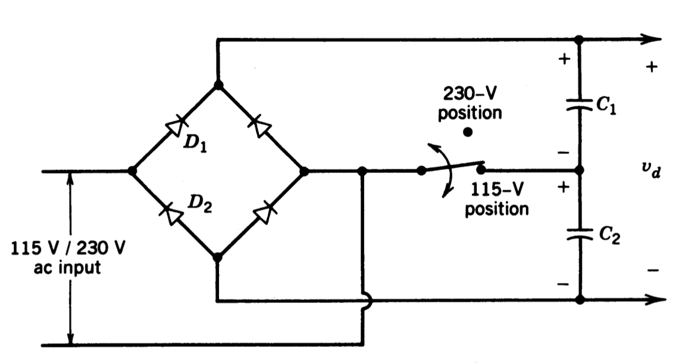 --- #Quiz -- ### Many single-phase rectifiers are connected to three phase system. ### Can you plot the neutral line current? --- ## Effects of Single Phase Rectifiers -- - ## Voltage Waveform (Notching) -- - ## Neutral Line Current -- - ## THD --- ## Effects of Single Phase Rectifiers ## Current Distortion 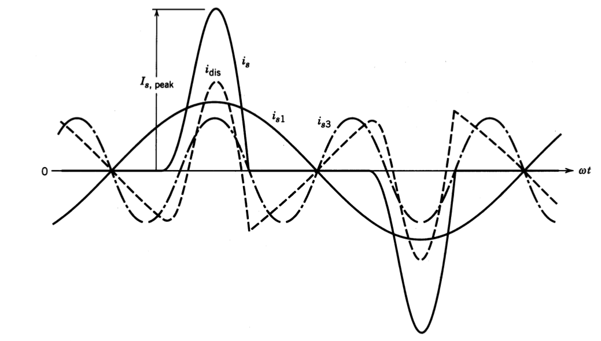 --- ## Effects of Single Phase Rectifiers ## Line Voltage Distortion 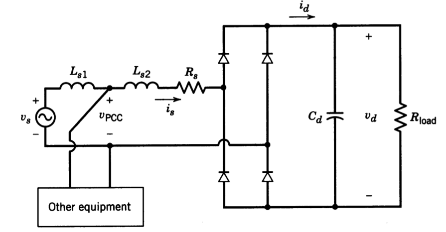 --- ## Effects of Single Phase Rectifiers ## Neutral Line Current 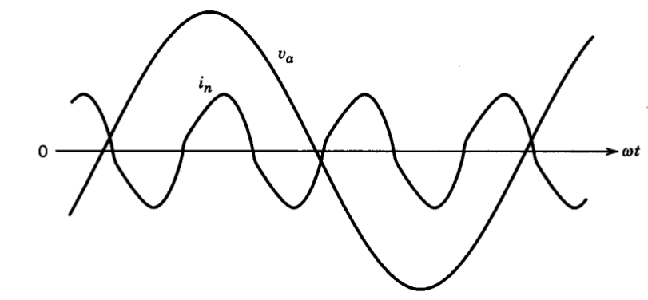 --- ## You can download this presentation from: [keysan.me/ee463](http://keysan.me/ee463)